|
||||||||||||||||||||
|
25 décembre 2013 - Noël au balcon, Pâques aussi Comme dit le proverbe... En cette belle journée, où le soleil nous inonde par 24°C, nous sommes plus que jamais à la fin du voyage en bateau. Ces 4 dernières semaines auront été assez moroses. La vente de notre beau bateau est en bonne voie, nous avons signé un compromis. Cela n'a pas été sans peine, entre le broker local dont l'activité principale est de se protéger contre les procès (et donc de nous faire signer des décharges, de ne s'engager à rien et de contacter son avocat avant d'aller au toilettes - ce qui explique sans doute pourquoi il voulait 10% de com.) et l'acheteur qui a scruté le bateau à la loupe pendant 3 jours, nous avons été bien occupés. Mais, c'est signé! Reste à accomplir quelques formalités, tant en Belgique qu'aux US. On a failli en oublier l'anniversaire de Cécile! C'est dire. Nous avons commencé à vider le bateau et, surtout, à sélectionner ce que nous souhaitons emporter pour la suite des opérations. Nous avons droit à 45 kg par personne dans l'avion, ce qui implique un tri assez sévère... Cabine par cabine, nous avons parcouru le bateau en opérant un tri: on garde, on jette ou on emporte. Après un premier passage, nous avons mesuré grossièrement le poids de ce que nous voulions garder 'absolument', soit 170 kg. Ouf... Il nous reste 55 kg de bon.
On a aussi pu constater que certains objets étaient hors format et qu'étant limités à 2 pièces par personne, nous n'avions pas assez de grands sacs pour tout emporter. Heureusement, on a profité de notre présence aux US pour dévaliser Amazon et, par la même occasion, se faire livrer 4 énormes sacs de voyage au format calculé expressément pour le voyage en avion. La fin du voyage n'aura pas été perdue pour tous le monde puisque nous avons donné beaucoup de chose à gauche, à droite, dont des livres à l'école française de San Diego, des vêtements aux autres bateaux du ponton et, évidemment, des tas de trucs devenus inutiles pour nous... La ligne de flottaison du bateau s'est déjà élevée de quelques cm. Le 13 janvier, nous quitterons Let It Be pour de bon avant de décoller vers le sud. |
||||||||||||||||||||
|
8 décembre 2013 - Terminus, tous le monde descend !! Voilà 3 semaines que nous sommes à San Diego, fin plus que probable de notre périple pacifiste.
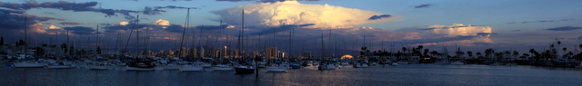 Il y a beaucoup de bateaux à San Diego On profite des jours ensoleillés et de la relative chaleur pour commencer l'évacuation du bateau.
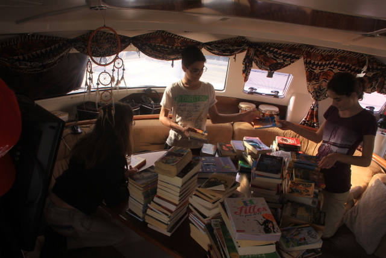 Les enfants trient les livres On a déjà bien travaillé, en donnant des vêtements, des livres et des tas de choses désormais inutiles, comme les moustiquaires, etc.
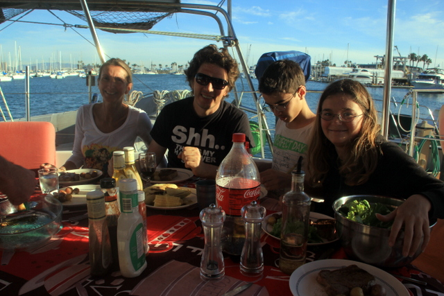 Karin et Jan en visite Nous avons également accueilli Karin et Jan, qui seront parvenus à mettre le pied sur Let It Be d'extrême justesse. Ils sont venus les bras chargés de cadeaux et nous avons passé un agréable week end au soleil californien.
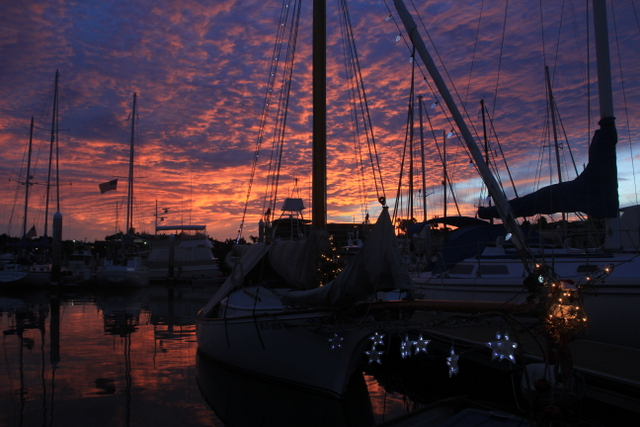 C'est bientôt Noël Ensuite, nous sommes revenus à nos préoccupations du moment: préparer le bateau à la vente et lancer notre nouveau projet, dont le nom de code est Méitai. Cela nous fait tout drôle de (re)changer de vie. |
||||||||||||||||||||
|
14 novembre 2013 - Channel Islands Après 2 mois de séjour à San Francisco, Let It Be a fièrement repris la mer en direction du sud, de la chaleur et des Channel Islands.
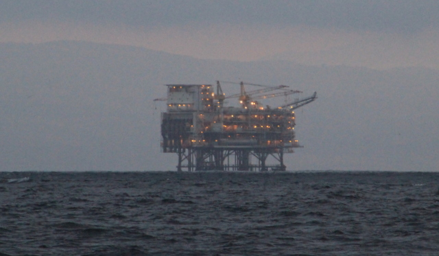 Une plate-forme pétrolière au large de Los Angeles En effet, si les mouillages ne sont guère nombreux sur la côte, à l'exception de quelques marinas huppées, il est néanmoins possible de jeter l'ancre dans les criques mal protégées des Channel Islands, chapelet d'îles situées au large de Los Angeles.
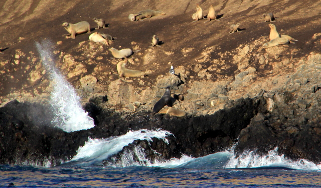 Une colonie de lions de mer sur l'île de Santa Barbara Ces îles arides sont pratiquement désertes en cette saison, du moins en ce qui concerne les humains. En effet, la faune y est bien vivace. On y trouve des lions de mer, des dauphins, des pélicans, des oiseaux en tous genre et même des baleines bleues qu'on confond avec la mer, bleue elle aussi, raison pour laquelle on n'en a pas vues.
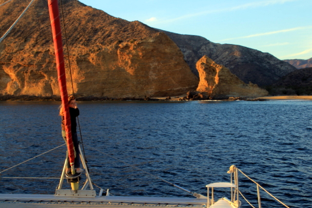 L'île de Santa Cruz Nous avons jeté l'ancre ça et là, en prenant bien soin d'être entourés d'otaries jouettes. Le matin, on se réveille au son de leur respiration sonore, quand elles émergent en faisant un grand pfffff à côté du bateau.
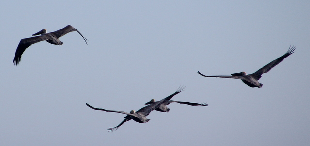 Un vol de pélicans Un peu plus loin, nous avons retrouvé la civilisation en arrivant à Catalina, île située à 35 km de Los Angeles et sur laquelle se trouve Avalon, petite bourgade qui fait office de Knokke le Zoute insulaire pour les marins du dimanche Losangelesois. La ville nichée dans une petite baie fermée ne manque pas de charme, avec son petit air rétro et son architecture art-déco. On n'y est resté que quelques heures car il est interdit d'ancrer dans la baie (il faut prendre une bouée au prix exorbitant) et les prix pratiqués par les restaurants et les bars tiennent plus du racket que du commerce.
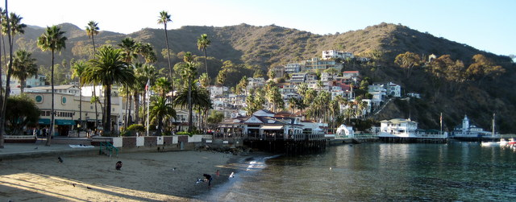 Avalon, sur Catalina Vers 19h, nous avons levé l'ancre en direction de San Diego, à quelques 15h de navigation. Le ciel était étoilé, la mer plate, le vent doux. Après 3 heures de navigation au moteur, nous avons réalisé que nous étions en fait en plein combat naval. Le War Ship 12 faisait des ronds dans l'eau par 33°N et 118°W tandis que son complice, un certain War Ship 57, situé en un lieu tenu secret, se contentait d'informer un sous-marin que le tir de missile était imminent. Même les aircrafts s'en sont mêlés...En conséquence, toutes les embarcations situées dans un rayon de 35 nautiques autour du 'Fleet Control' devaient se dérouter. Les soldats américains n'ont rien trouvé de mieux que d'organiser un combat naval grandeur nature avec Let It Be au milieu. On a passé la nuit à expliquer qu'on allait tout droit vers San Diego et que 5 noeuds, c'était notre vitesse maximale... On a même contacté le War Ship 22 pour lui dire qu'on le voyait sur notre radar et qu'on passerait à 2.5 nautiques de sa position s'il n'en changeait pas. Vers 2h du mat, ils avaient fini leur petit jeu et le vent s'est levé, contrairement aux putains de prédictions météo de mes deux. On s'est farci 20 noeuds plein sud, ce qui a considérablement détérioré nos conditions de navigation. Mais il en faut plus pour nous briser. Après avoir dormi à peine plus de 2h au cours de cette nuit rocambolesque, on s'est présenté face au chenal de San Diego, juste devant le War Ship 57, un monstre de métal aux dimensions impressionnantes. On a emprunté le chenal à du 4 noeuds, pour bien bloquer ce gros lourdeau, tandis que les hélicoptères de l'armée faisaient des va-et-vient au-dessus de nos têtes. San Diego est une base navale importante du dispositif impérialiste américain... |
||||||||||||||||||||
|
2 novembre 2013 - Emery Cove Certains parmi vous s'en émeuvent: ce serait la fin du voyage pour la famille Laruel. Qu'ils se rassurent, non seulement le bateau n'est pas encore vendu mais, en outre, nous avons quelques projets pour la suite des opérations.
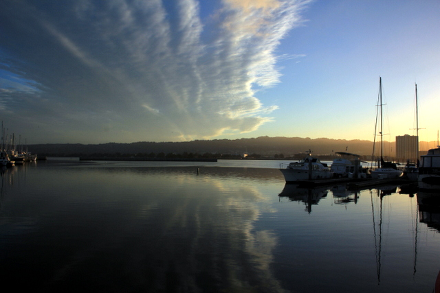 La nuit recouvre le mouillage Pour commencer, nous allons reprendre la mer dès ce mardi, en direction de San Diego. Nous ferons halte dans les îles au large de Los Angeles afin de ne rien faire. Après San Diego, nous irons au Mexique, passer les fêtes de fin d'années à La Paz avant de descendre vers l'Amérique Centrale. C'est pas beau ça? Et s'il reste des incrédules, sachez que l'année 2014 risque d'être riche en rebondissements... |
||||||||||||||||||||
|
29 octobre 2013 - M4972 - Fin du roadtrip Nous avions déjà visité le Yellowstone, Grand Teton, Dead Horses Point, Canyonlands, Natural Bridges, Monument Valley, Chelly's Canyon, Meteor Crater, Grand Canyon, Antelope Canyon, Bryce Canyon, Zion et le Yosemite. Vous l'aurez compris: il nous manquait le parc national des Grands Sequoias.
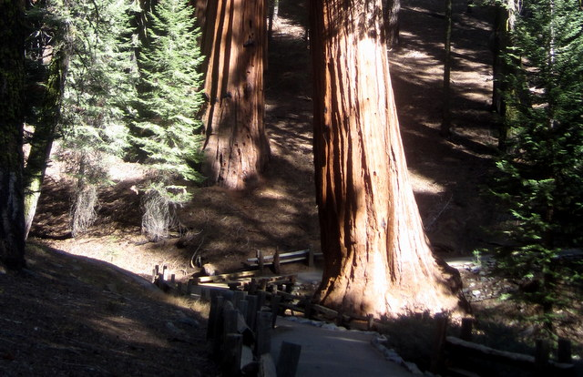 Les grands Sequoias Nous y sommes passés avant de revenir vers San Francisco et de rendre le RV avec 2 jours d'avance car nous avons nos premières visites d'acheteurs potentiels pour Let It Be. Il s'agit d'en briquer le pont et les cuivres afin d'épater la galerie.
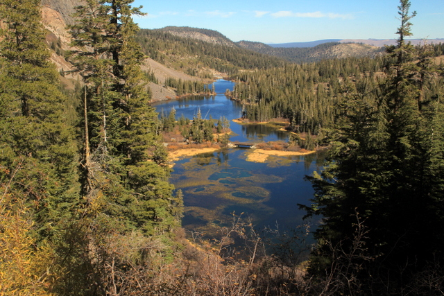 Une belle photo de Mammoth Mountain Au total, nous aurons parcouru près de 5.000 miles, visité un nombre impressionnant de parcs et dépensé en moyenne $25 par nuit de camping. Nous avons consommé plus de 2.000L d'essence (soit autant qu'avec le bateau en 2 ans...). Cécile a 'gardé' plus de 1800 photos (elle en a fait près du double), c'est vous dire l'album photos de folie que nous allons bientôt mettre en ligne.
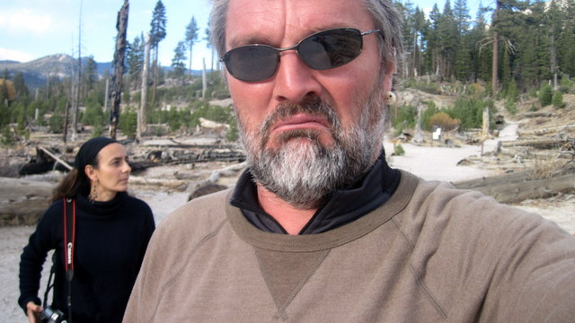 Eric pas content Dernière péripétie du voyage: lors du retour du véhicule, ils ont voulu nous faire payer $200 pour un mini éclat dans le pare-brise. J'ai bien failli m'énerver une fois de plus, faisant remarquer qu'on n'y était pour rien, qu'ils avaient sûrement des assurances 'bris de glace', que c'était réparable et que s'il me faisait payer un centime de plus, je les agonirais d'injures sur tous les sites web que je trouverais... On a fini par payer $75 et recevoir une ristourne de $150 en sus. Allez comprendre...
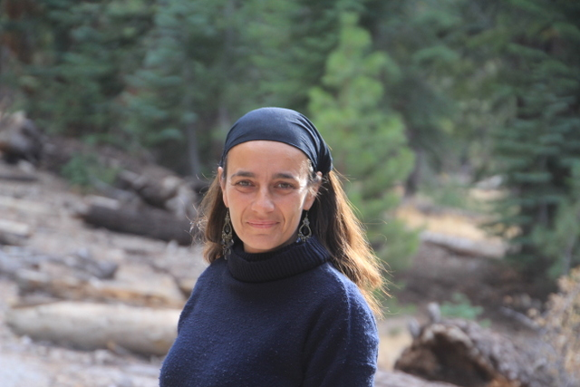 Cécile très jolie Nous avons retrouvé Let It Be, bien sage dans la marina, tout content de nous revoir après 5 semaines de séparation. Il est temps de se préparer à la transhumance vers le sud et surtout, de vendre notre fier navire à un non moins fier américain. |
||||||||||||||||||||
|
26 octobre 2013 - M4491 - Yosemite Le Yosemite devait constituer le point final de notre tournée triomphale aux USA. Avant de nous y rendre, nous souhaitions faire un peu attendre nos admirateurs en visitant le lac Mono, dont la particularité est la présence des Tufa.
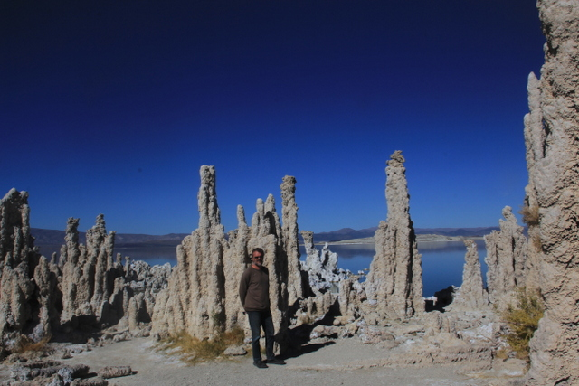 Les stalagmites de Mono Lake Le lac a été déshydraté à partir du milieu du XXème siècle afin d'alimenter Los Angeles en eau douce. Le résultat ne s'est pas fait attendre: le niveau des eaux a baissé, laissant apparaître des concrétions de carbonates issues des sources d'eau douce mises à sec. On peut s'y promener, c'est assez surprenant.
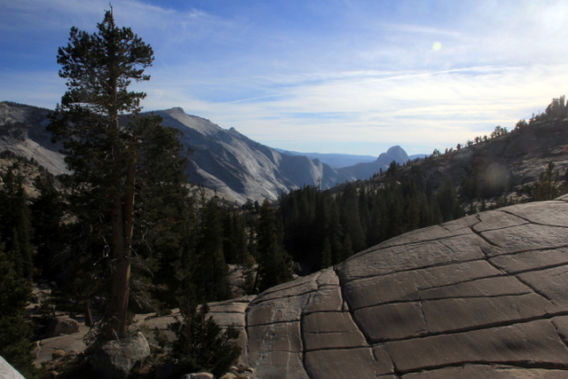 Les roches basaltiques du Yosemite Vers 17h, nous sommes arrivés dans le Yosemite où notre angoisse grandissante s'est révélée fondée: plus une place de camping dans le parc. Pour une raison que je ne m'explique pas, les autorités ont fermé la plupart des camping, ce qui fait que les optimistes comme nous ne peuvent trouver logement dans le parc. En outre, même en basse saison, il y a vraiment beaucoup de visiteurs...
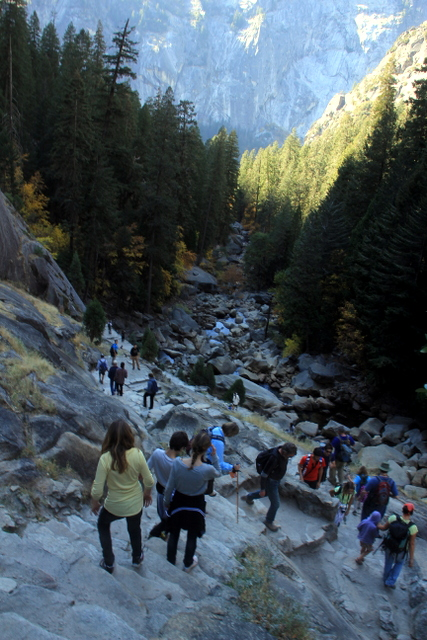 On est hors saison Ceux qui, comme nous, avaient déjà visité le parc il y a 15 ans, seraient surpris du changement: à l'image de Zion, Bryce ou du Grand Canyon, il semble que les parcs nationaux des US aient subi une métamorphose durant ces dernières années. Certes, la beauté des lieux est intacte mais les infrastructures érigées pour le tourisme de masse ont de quoi rebuter les amateurs de grands espaces vierges.
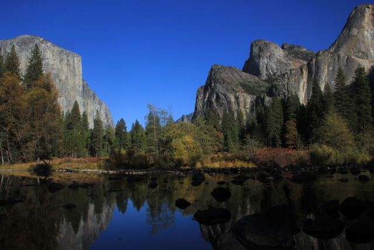 C'est joli El Capitan en automne C'est bien simple, il y a une route à double voie qui circule en boucle au fond de la vallée, dotée d'énormes parkings situés loin des départs de rando. Il faut prendre une navette pour se rendre aux lieux souhaités et l'on se retrouve comme des sardines, à marcher sur un sentier bétonné, à la queue-leu-leu. Comme dirait Cécile: "Je me demande ce que c'est en été". |
||||||||||||||||||||
|
24 octobre 2013 - M4345 - Mammoth Mountain Après un petit séjour dans la fournaise, nous revoici au froid et en altitude. Mammoth Mountain est en effet une station de sports d'hiver où se retrouvent les bourges de San Francisco pour passer le réveillon.
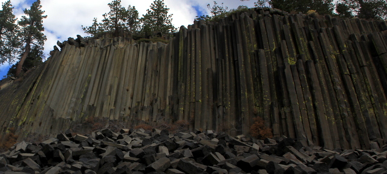 Les Devil Postpiles Pour nous, l'intérêt du lieu était la visite les Devil Postpiles et les Rainbow Falls.
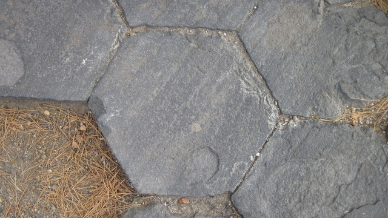 La base des prismes est un heptagone parfait, sauf celle-ci Les premiers sont une curiosité géologique: longs prismes de basalte très réguliers qui forment un mur de pitons à base heptagonale. C'est intrigant et je ne m'explique toujours pas pourquoi la lave, en refroidissant, a créé ces formes géométriques presque parfaites.
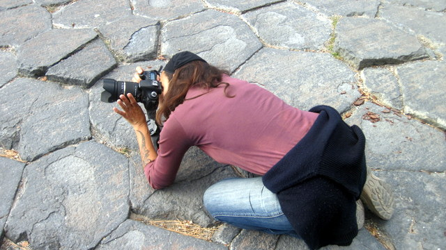 Cécile ne fait pas de si belles photos sans efforts Un peu plus loin, nous avons visité la Death Valley locale, appelée ici Death Forest Valley car elle a vu la mort de dizaines de milliers d'arbres lors du dernier incendie.
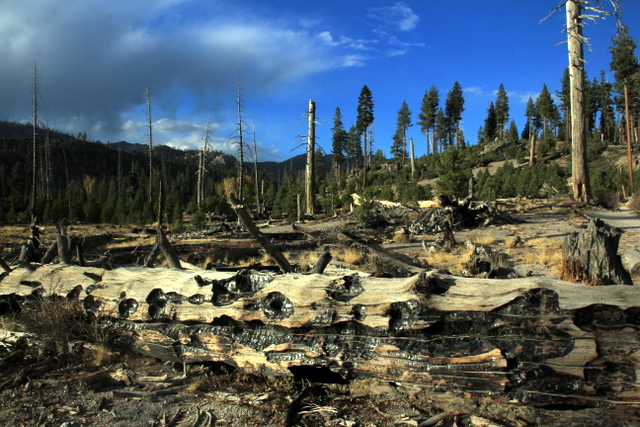 Death Forest Valley Nous avons marché quelques heures dans cet environnement surréaliste avant de tomber sur la chute d'eau.
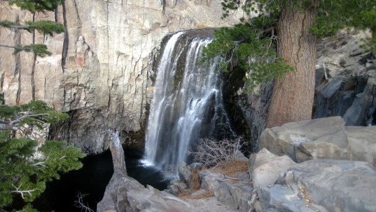 Rainbow Falls Il fait grand soleil la journée et grand froid la nuit, à près de 2.400m d'altitude... |
||||||||||||||||||||
|
23 octobre 2013 - M4087 - Death Valley Et non pas Valley of Death, comme Cécile l'a par mégarde annoncé à un voisin de camping hilare. Nous avons quitté Las Vegas, lieu de perdition pour des centaines d'aventuriers sur le retour, afin de nous lancer dans une nouvelle aventure: visiter la Vallée de la Mort et en sortir vivant...
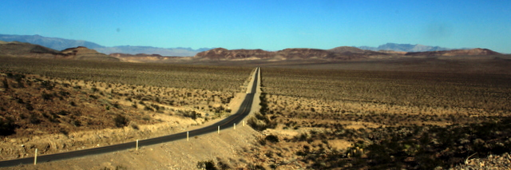 La route est longue et droite Vous rigolez mais, à l'image de Ann, coureuse de marathon morte d'épuisement dans le Grand Canyon, Gerhard n'a pas réussi ce que nous tentons: il est mort de soif dans la vallée... Son corps désèché a été retrouvé par les Rangers, 5h à peine après qu'il ait débuté la randonnée qu'il ne termina jamais, comme David Vincent. En tous cas, c'est ce que dit la brochure pour nous inciter à la plus grande prudence...
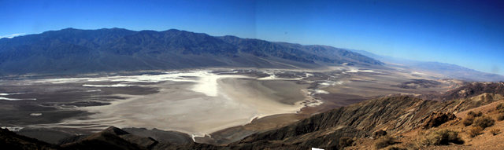 Death Valley vue de haut Avant d'entamer cette traversée fantastique, nous avons découvert, un peu par hasard, le paradis sur terre, à Shoshone. Cette micro bourgade de 3 habitants dispose d'un RV park invraisemblable. Non seulement peut-on y déposer le véhicule sur l'herbe (en plein désert) mais il y a aussi des barbecues, de l'électricité, une buanderie, une bibliothèque et... une piscine.
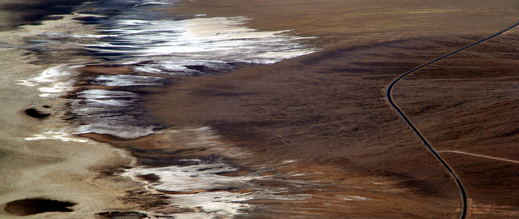 Le sel et la terre Je dois avouer qu'on a été scotchés. Quand le monsieur nous a dit qu'il y avait une source chaude (32°C) sur le terrain et que cette source alimentait la piscine en continu avant d'irriguer ce petit paradis dans le désert, j'étais sceptique. Après avoir passé 2h dans ladite piscine, j'étais convaincu... En plus l'eau est minérale et ne fait que transiter par la piscine, on peut nager les yeux ouverts sans qu'ils ne piquent!!!
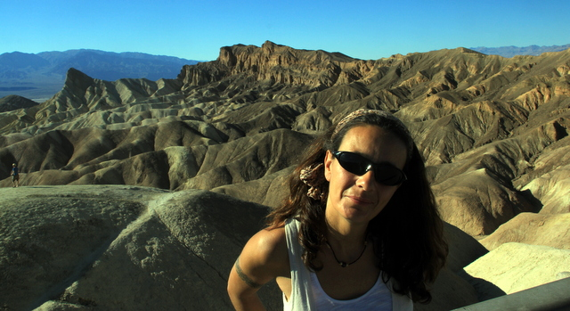 Chouchou à Zabriskie Point (splendide photo, et originale, en plus...) Après la baignade, nous avons profité du BBQ pour faire cuire des côtes de boeuf et faire griller quelques marshmallows en évoquant le bon vieux temps. Vers 23h, la température devenait franchement polaire, et nous avons même été obligés de mettre un sweater.
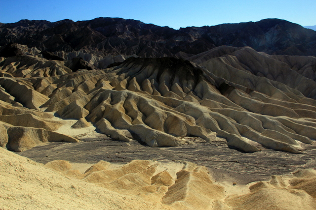 Flan au caramel Le lendemain, nous sommes passés dans la Death Valley où il fait très chaud (35°C en cette fin octobre) et où nous avons logé à -60m d'altitude, à Furnace Creek, où il fait aussi chaud, comme indiqué par l'appellation... |
||||||||||||||||||||
|
21 octobre 2013 - M3840 - Las Vegas Nous voici à Las Vegas, dans un camping urbain tout confort. Le programme des 3 journées que nous avons passées ici n'a pas varié: on se lève à l'aube vers 10h du matin, on ne fait rien jusqu'à 17h, à part surfer comme des malades sur Internet (pour une fois qu'on a un WiFi de bonne qualité, on se lâche) et, ensuite, direction le 'strip'.
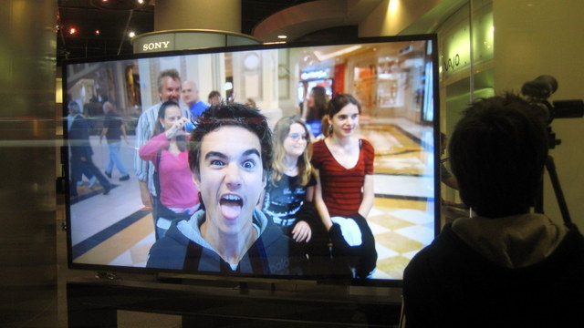 Sidney On stationne notre gros RV sur le parking gratuit du Paris Las Vegas et on se faufile jusqu'au grand boulevard avant d'écumer les casinos les uns après les autres jusqu'à minuit. Ensuite, on rentre à la maison et on debriefe jusqu'à 1h du mat pour se relaxer avant de dormir.
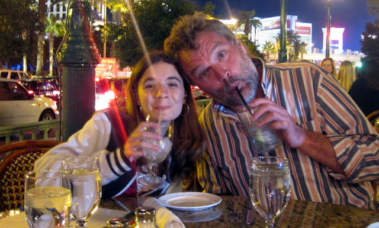 Kenya et Eric Comme les enfants ne peuvent ni jouer, ni boire d'alcool et que les spectacles s'affichent à des prix indécents, il ne nous reste qu'une activité: le regardage et le bouffement.
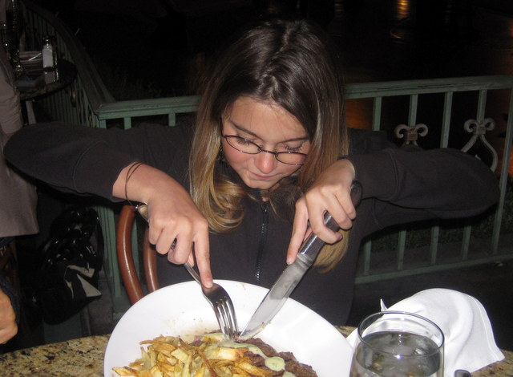 Syr Daria Et là, il faut reconnaître qu'à Las Vegas, on est servi, tant dans les casinos que dans les passerelles qui enjambent les artères de la ville ou même sur les trottoirs. Toujours un petit spectacle de rue, un restaurant ou un bar en plein air et évidemment, les attractions des grands casinos...
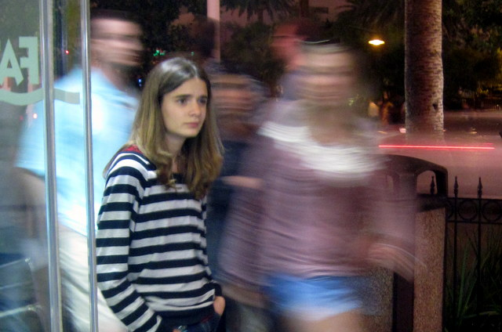 Kenya Le samedi soir, c'est la grande foule. On s'agglutine au Mirage pour assister au son et lumière du volcan, au Treasure Island pour voir un abordage en 'life' dans une énorme piscine ou, plus calmement, au spectacle des fontaines du Bellagio.
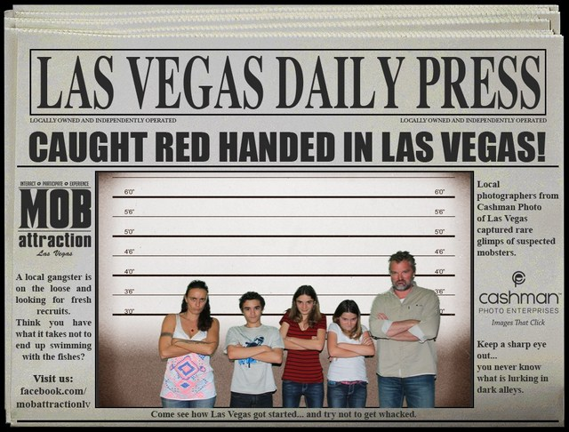 Et voilà le résultat: retrécis, on ne mesure plus que 4 pieds... C'est fantastique. Las Vegas, c'est vraiment un monde à part, une quatrième dimension. Tout est permis. On peut même fumer dans les casinos ou boire une bière en pleine rue... Quelle folie ! |
||||||||||||||||||||
|
19 octobre 2013 - M3595 - Zion Au rayon des arnaques, voici Zion National Park. Nous étions tout excités de visiter ce haut lieu du coloriage de bitume mais nous avons été déçus.
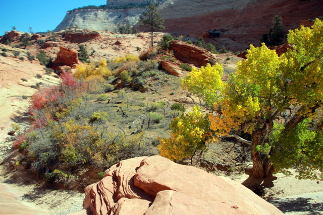 La seule photo de Zion Oh, pas par la beauté surnaturelle de l'endroit, mais par la mesquinerie des autorités qui ont eu l'outrecuidance de nous réclamer 15$, en plus des droits d'entrée dans le parc de 25$, pour 'escorter' notre véhicule dans le tunnel.
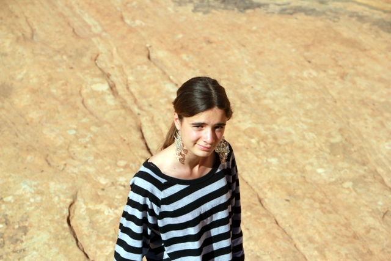 Kenya De fait, notre véhicule est 'oversized' et, de fait, leur tunnel est 'undersized'. Donc, pas moyen de se croiser. Donc, circulation alternée. Et voilà en quoi consistait l'escorte que nous avions si chèrement payée: une circulation alternée...
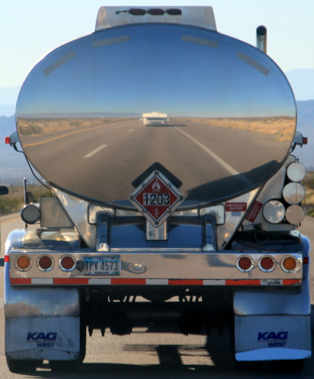 On voit notre RV dans le camion de devant... Bref, on passe le tunnel avant d'aborder la 'scenic road'. Eh bien, non. La route en question est réservée aux tour operators et aux navettes. Pas moyen d'y accéder en voiture. Et, évidemment, les parkings le long de la route principale sont trop petits ou trop bondés pour notre RV et les navettes sont également bondées et peu fréquentes. Bref, on a refusé de perdre encore des heures dans ces plans foireux et on a pratiquement rien vu de Zion...
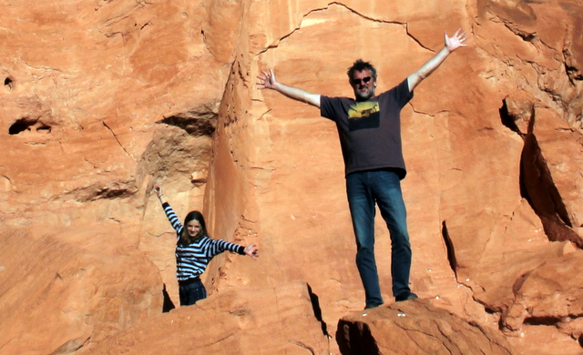 Eric et Kenya dans la Vallée de Feu Fièrement, nous sommes allés à Las Vegas, sans un regard vers notre passé afin d'aller nous rouler dans le stupre, la luxure et les dollars. |
||||||||||||||||||||
|
18 octobre 2013 - M3495 - Bryce Canyon Que dire de Bryce Canyon? C'est un endroit tellement magnifique qu'on devrait avoir le même en Belgique.
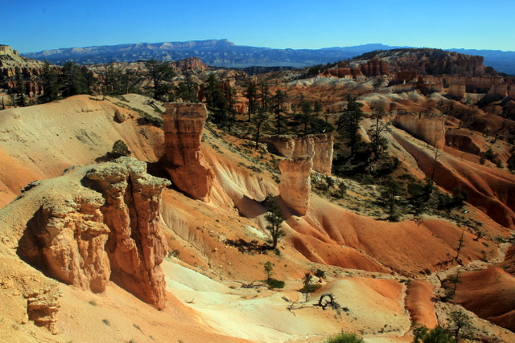 Les teintes sont variées dans le Canyon Situé à plus de 2.400 mètres d'altitude sur un plateau, il y fait un peu froid en cette saison mais, grâce à l'absence totale de nuages l'air y est d'une clarté sans égale.
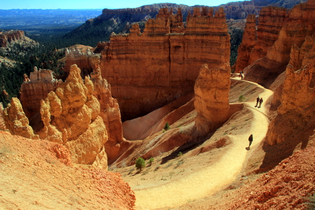 Le chemin serpente entre les Hoo-Doos En cette belle matinée, nous avons parcouru les chemins de promenade les plus populaires du Canyon, accompagnés de notre cohorte de supporters habituelle.
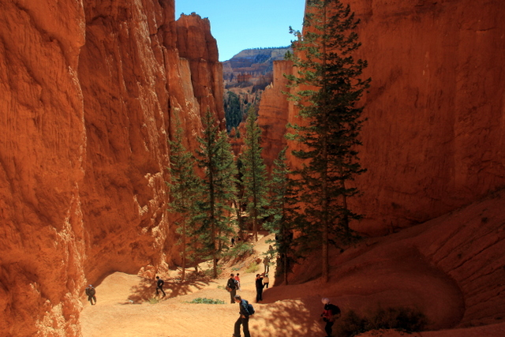 La Navajo Trail, très escarpée Après avoir signé quelques dizaines d'autographes, nous avons demandé à nos gardes du corps de nous escorter au sein du parc. Il faut dire que, malgré que l'on soit en arrière-saison, il y a quand même beaucoup de monde dans le parc (on se demande ce que c'est en été...).
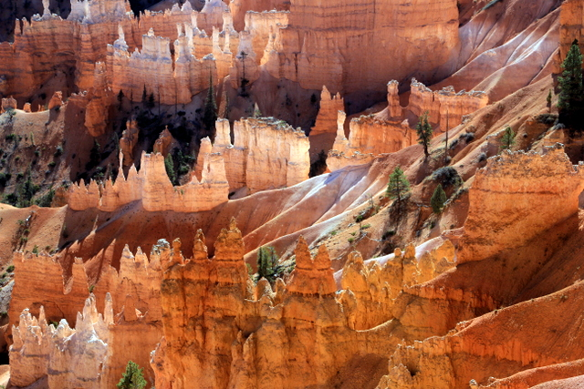 C'est beau hein? La promenade de 8 km nous a fait traverser des paysages plus invraisemblables les uns que les autres, dans des tons de roches allant de l'ocre à la terre de Sienne en passant par le blanc origami.
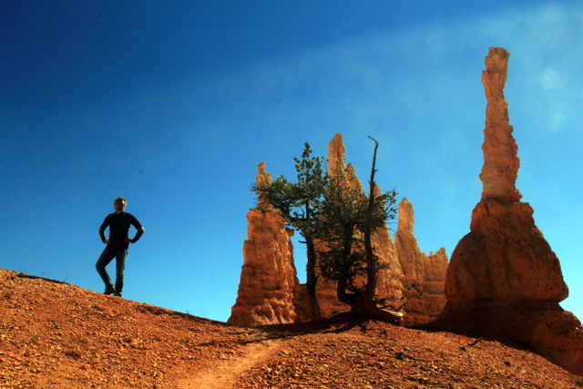 Eric dans un décor semi-lunaire Même la montée presque verticale de la 'Navajo Loop' n'a pas eu raison de notre enthousiasme, excepté pour Syr Daria, qui ne porte vraiment pas les pistes indiennes dans son coeur.
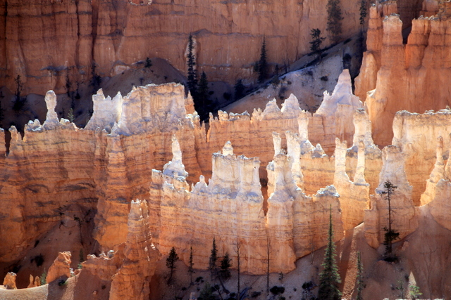 On dirait que les pitons rocheux sont éclairés de l'intérieur Après 2 heures de marche, nous avons mangé notre casse-croute en regardant les écureuils faire une manoeuvre d'approche discrète pour nous voler notre pain.
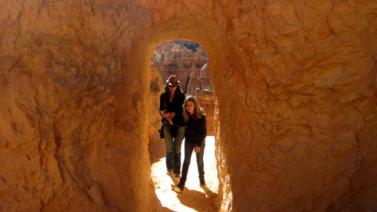 Cécile et Syr Daria dans un tunnel Pour finir, 3h30 auront été nécessaires pour boucler les 8km (ce qui me fait penser qu'il devait y avoir un peu plus que 8 km...). Même Sidney a trouvé la ballade sympa: mieux que le Grand Canyon. C'est dire...
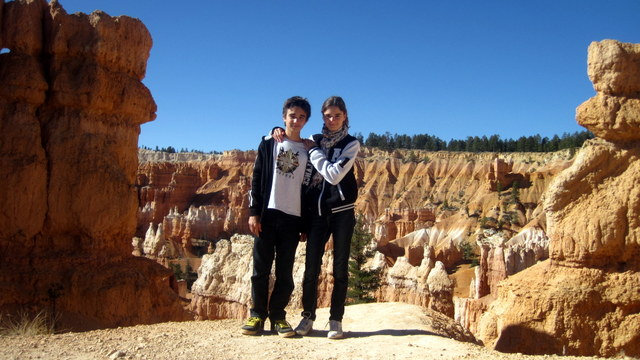 Ken & Sid au bord du Canyon Il ne nous restait plus qu'à visiter TOUS les belvédères du parc, ce qui ne fut qu'un jeu d'enfants pour Cécile. |
||||||||||||||||||||
|
17 octobre 2013 - M3487 - Antelope Canyon 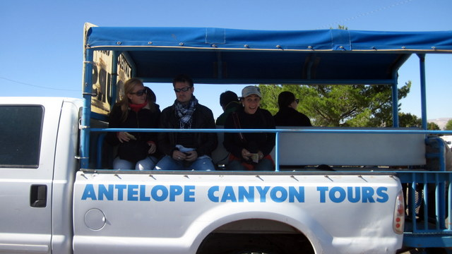 Cécile s'en va-t-en guerre Dans le palmarès des endroits à ne pas rater, Antelope Canyon occupe une place de choix. Et tout le monde le sait. Vous aussi, vous avez déjà vu des photos de ce lieu magique, sis en territoire indien.
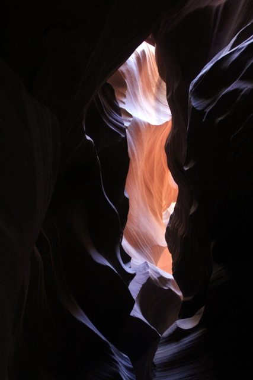 Antelope Canyon Au départ, nous voulions profiter de la visite en famille. Hélas, les indiens, propriétaires des lieux, ont bien compris qu'ils tenaient là une machine à faire du fric comme il en existe peu. Il est par conséquent interdit de visiter par soi-même, il faut passer par une visite guidée, qui coûte la bagatelle de $46 par personne. Soit plus de $200 pour nous 5.
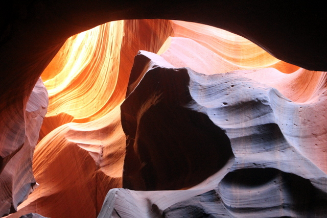 Antelope Canyon Nous avons tiré à la courte paille pour savoir lequel d'entre nous serait l'heureux élu à pouvoir se frayer un chemin dans le Canyon. Et ce fut Cécile.
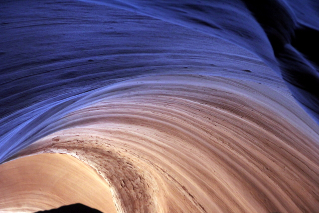 Antelope Canyon Ne ménageant pas ses efforts, Cécile prit place à bord du 4x4 qui l'emportait au loin, parmi des dizaines de touristes assoiffés de photos et bardés d'appareils dernier cri. "Dans l'étroit Canyon, on se croirait dans le grand souk d'Istanbul", dixit Cécile.
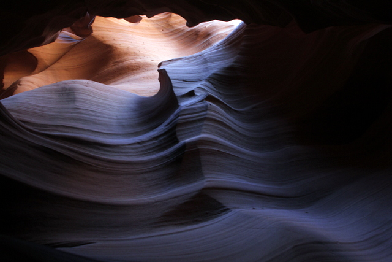 Antelope Canyon La visite se fait par groupe de 12, au pas de charge, dans une cohue indescriptible. Seuls les plus aguerris arrivent à prendre quelques clichés dans la bousculade permanente. Sauf, bien sûr, Cécile qui n'a pas pris 50.000 photos lors de nos 4 années de voyage sans acquérir l'expérience nécessaire pour immortaliser la quintessence de ce lieu magique. |
||||||||||||||||||||
|
16 octobre 2013 - M3326 - Grand Canyon Comme promis, nous nous sommes levés à l'aube afin d'entamer une descente sans retour vers les tréfonds du Grand Canyon.
A l'aube, la température est polaire sur le plateau culminant à plus de 2.000 mètres d'altitude, ce qui ne nous a pas empêchés de réaliser un exploit sans précédent.
La voie qui mène au Colorado est escarpée et seule la présence d'un sentier balisé, fruit du travail de nombreux rangers morts au cours de son édification, nous a permis de survivre aux éboulis fréquents.
Après 340m de dénivelé négatif, nous avons savouré un moment d'intense émotion, perdus dans cette immensité sauvage avant de revenir sur nos pas.
Après plus de deux heures d'efforts insensés, nous avons retrouvé les sommets, épuisés mais heureux. Le Grand Canyon est vraiment d'une beauté époustouflante et les à-pic qui bordent le chemin de randonnée donnent le tournis, même aux marins les plus endurcis. |
||||||||||||||||||||
|
15 octobre 2013 - M3190 - Grand Canyon C'était bien vrai. En l'absence d'un accord politique au niveau fédéral pour la péréquation du budget dans une période difficile mais qui fait l'objet de négociations et gnagnagna et gnagnagni, les états reprennent les choses en main. Première étape: réamorcer la pompe à fric en ouvrant les parcs.
De fait, on s'est présenté ce matin aux portes du Grand Canyon et, miracle, on est entré sans problème, comme des milliers d'autres touristes. Une fois sur la grande faille, on a compris pourquoi la fermeture constituait un réel manque à gagner pour les locaux. Malgré la période difficile, il y avait foule le long des précipices, à tel point qu'il nous fut difficile de prendre des photos en petit comité. Toujours un japonais ou l'autre pour faire le zouave en arrière-plan...
Et sinon, on ne regrette pas d'avoir re-fait la route en sens inverse pour visiter ce haut-lieu de la beauté mondiale. C'est vraiment fantastique et je ne peux que vous convier à venir ici un de ces jours, même s'il fait un peu froid en cet automne.
C'est tellement joli que, dès demain, on va se faire une petite promenade dans le canyon. Les randos sont classées en fonction de leur difficulté: de 'facile' à 'très difficile'. Facile, c'est marcher le long de la faille. Très difficile, c'est descendre jusqu'au Colorado, 1500m plus bas...
On a choisi 'modéré', tant pour le manque d'enthousiasme des enfants qui ne comprennent pas ce qu'on peut bien faire dans le canyon alors qu'on voit très bien d'en haut que pour ma condition physique déclinante, surtout pour des marches verticales à 2000m d'altitude. |
||||||||||||||||||||
|
12 octobre 2013 - M2916 - On route 66 En attendant que ces inconscients du congrès se décident enfin à ré-ouvrir les parcs, on s'occupe comme on peut...
Aujourd'hui: escapade sur la légendaire route 66 dont il faut bien dire qu'il ne reste pas grand-chose. Toutefois, entre Kingman et Oatman, cette fameuse route serpente dans le Pecos de fort jolie manière.
On y trouve des bikers à la pelle (et pas en Kawasaki, si vous voyez ce que je veux dire) et des villages fantômes que les américains ressuscitent à coup de duels en pleine rue, au grand plaisir des petits et des grands.
En outre, on a trouvé une faille dans le dispositif anti-visite des autorités: le Grand Canyon est paraît-il accessible à l'ouest, en plein territoire indien...
Renseignement pris, il n'en coûte que $29.95 pour se promener le long de la grande fissure... Déjà, 25 euros (par personne) pour marcher dans le désert me paraissait indécent mais, comme d'habitude aux US, quand on y regarde de plus près, le prix annoncé est parfois assez loin du prix payé. En effet, à la somme écrite en caractères gras sur le prospectus, il faut ajouter ce qui est écrit en petit: un 'impact fee' de 8$, puis une 'fuel surcharge' de 4$, sans oublier les taxes locales, soit, au total, 45$ pour marcher dans le sable. Je n'arriverai jamais à comprendre pourquoi ils n'affichent pas le prix qu'on paie. C'est comme dans les restos. Tout est toujours bon marché jusqu'à ce qu'on reçoive l'addition, la vraie...
Bref, on n'a pas visité le Grand Canyon mais on a assisté à un duel au revolver en pleine rue, comme au bon vieux temps, pour pas un rond! En plus, il semble que certains états commencent à trouver que la plaisanterie a assez duré. En Arizona, l'état a décidé de se substituer au fédéral et les parcs 'nationaux' devraient rouvrir dès demain, financés par les autorités locales... Enfin!! |
||||||||||||||||||||
|
10 octobre 2013 - M2673 - Petite pause On a beau être dans le désert, il arrive quand même qu'un épisode pluvieux survienne inopinément. C'est ce qui s'est passé en ce jour. On a d'abord eu droit à des vents de 60 km/h pendant la journée avant de subir un rinçage nocturne.
Bien à l'abri dans notre campground, nous avons fait le gros dos avant de nous rendre au Meteor Crater. Il s'agit, je cite: "du premier et du mieux préservé cratère de notre terre". Passez-moi la traduction un peu littérale. C'est fou ce qu'un petit bout de métal tombant de l'espace intergalactique sur notre planète à plus de 50 km/s peut faire comme dégâts. Le trou est gigantesque. Les plus habiles d'entre vous auront repéré la grossière supercherie de la photo: puisqu'il est interdit de descendre dans le cratère, les organisateurs ont prévu un espace dédié à ceux qui veulent immortaliser leur visite sans jamais sortir du musée.
Après ces exploits, nous sommes partis vers Sedona, petite ville fort agréable sise entre Flagstaff et Phoenix. Les paysages sont rouges et verts et, si le soleil revient, on pourra en profiter pleinement dès demain. |
||||||||||||||||||||
|
8 octobre 2013 - M2483 - En territoire Navajo Après une nuit magique passée dans la Vallée des Dieux, nous avons mis le cap sur le Goosenecks State Park qui permet de constater que l'eau est plus forte que la pierre, aussi dure soit elle.
Regaillardis par ce succès inespéré, nous avons fondu sur la Monument Valley, en plein territoire Navajo. Cette vallée est célèbre dans le monde entier pour ses décors de western, à tel point qu'on s'attend à tout instant à voir une dilligence sortir de derrière les rochers. En ce qui nous concerne, on a surtout vu sortir notre portefeuille pour débourser 25$ à l'entrée, et apprendre un peu plus tard que la vallée était interdite aux RV... Enquêtant sur cette imposture, nous apprîmes que la visite était néanmoins possible en tour organisé, moyennant paiement substantiel. Refusant le racket depuis le triste épisode des Galapagos, nous sommes repartis sans avoir rien vu...
Enfin, il faut être honnête, on a quand même vu plus de la Monument Valley dans le parc Navajo que des Natural Bridges dans parcs nationaux fermés. Et puis, la route valait le détour à elle seule.
Quand on trouve un filon, on l'exploite. Les parcs tribaux étant ouverts, ils constituent un refuge idéal pour les frustrés du 'shutdown'. Après la relative déception de la Monument Valley, nous avons pris la direction du Canyon de Chelly, haut lieu de la mystique Navajo et visite obligatoire pour les aficionados du Lieutenant Blueberry.
C'est en effet dans le fond de cette crevasse que les indiens ont décidé de construire une cité à même la falaise. Nous avons passé la nuit sur les hauteurs, dans un campground bercé par une flûte Navajo persistante qui rendait le séjour un peu surréaliste. Le lendemain, nous n'avons pas ménagé nos efforts en descendant dans le fond du canyon au cours d'une randonnée creusée dans la roche.
Ce fut aussi l'occasion de constater le grand écart que doivent réaliser les Navajos, partagés entre le souhait de garder leurs coutumes et leur mode de vie ancestral et le besoin de se faire des kopecks en laissant des hordes d'étrangers visiter leurs sites sacrés. Du coup, les touristes sont priés de rester sur le sentier et de ne pas photographier les Indiens ou leur habitat qu'ils croisent en chemin. Par contre, il est tout-à-fait possible d'acheter des colifichets en cours de randonnée. Autre surprise: pas moyen de trouver une bière en territoire Navajo, c'est un territoire sans alcool. C'est peut-être un détail pour vous, mais pour moi ça veut dire beaucoup ! |
||||||||||||||||||||
|
6 octobre 2013 - M2275 - Natural Bridges Natural Bridges Park doit son nom aux arches de pierre que l'on y trouve. Enfin, quand le parc est ouvert car, malgré que ce ne soit pas un Parc National et que nous caressions donc l'espoir de le visiter, nous trouvâmes route close.
Même cause, mêmes effets: nous avons stationné notre RV le long d'une route à peine carrossable et, dès le lendemain, nous avons visité le parc en catimini.
Evidemment, on ne peut pas emprunter le chemin d'entrée officiel. On a décidé de marcher à travers tout, ce qui, en l'occurrence, voulait dire à travers les canyons. Comme ces obstinés de Rangers continuent à patrouiller sur les routes, on essaie d'être discret et de marcher dans le lit des rivières asséchées.
On a réussi à s'infiltrer incognito et visiter une partie du parc, ne reculant en définitive que devant un à-pic infranchissable, même pour des baroudeurs de l'extrême.
Bien contents de notre petit exploit, nous sommes repartis vers le sud et la Monument Valley, dont le statut de parc 'tribal' nous laissait croire à une visite possible.
Dès le début de la route, un panneau indiquait 'Interdit aux véhicules lourds'. Ce genre de menace ne nous fait pas peur. Après une trentaine de miles, la route s'arrête net au bord d'une falaise abrupte de 250m. C'est là qu'on a compris pourquoi il était déconseillé de venir ici avec un camion...
La route longe en effet la falaise en enchaînant les virages en épingle qui offrent des panorama étourdissants. Naturellement, le franchissement de cet obstacle n'a posé aucun problème à Cécile.
A peine étions-nous dans la plaine que Cécile a enchaîné par la Vallée des Dieux, petite route étroite, sinueuse et nous goudronnée qui serpente entre les pitons rocheux rougeoyant au crépuscule.
C'était tellement fantastique que l'on n'a pas pu s'empêcher de bivouaquer en remerciant les Américains d'avoir si ingénieusement fermé tous leurs parcs. Grâce à eux, nous sommes littéralement forcés de sortir des sentiers battus, ce qui nous fait découvrir des merveilles que nous n'aurions même pas idée si nous étions restés dans les parcs... |
||||||||||||||||||||
|
5 octobre 2013 - M2159 - Canyonlands Certes les parcs nationaux sont fermés. Certes les routes d'accès sont barrées. Certes les Rangers patrouillent (curieux ça d'ailleurs...ils ne sont pas payés et ils font quand même leur travail de chien de garde en s'en prenant à nous plutôt qu'à ceux qui les maltraitent).
Mais cela n'arrête pas des mecs qui ont traversé le Pacifique à la voile d'Ouest en Est. Ce matin, après avoir bu notre thé au soleil du petit matin dans un silence total, nous sommes allés trouver Tracy.
On se serait cru revenu pendant la deuxième guerre mondiale, près de la ligne de démarcation. Tracy nous expliqua comment entrer dans le parc, à pied, sans se faire repérer par les méchants Rangers aux puissantes jumelles.
De fait, après avoir stationné le RV à la limite du parc, nous avons entamé une marche en file indienne dans le bush. On a respecté les instructions de Tracy: suivre le rocher, passer entre les deux arbres verts, traverser la route, descendre dans l'oued et le suivre jusqu'à une route pour 4x4.
Evidemment, dès la route passée, on s'est perdu et on a marché le plus droit possible, d'abord dans le bush, puis sur les collines rocheuses, avant de dévaler dans les canyons et de retrouver les infrastructures du parc.
Comme il n'y avait personne dans le parc, on s'est promené une fois de plus sans aucune compagnie, profitant des lieux comme s'ils nous appartenaient. Je dois reconnaître que ces lieux somptueux sont déjà impressionnants quand on les visite en bande mais là, seuls comme des contrebandiers, la visite avait une saveur particulière que j'ai du mal à décrire.
Tandis que nous marchions dans le semi désert, nous ne pouvions que nous satisfaire d'avoir bravé les interdits et je me promis, personnellement, de visiter TOUS les parcs que je voudrais, fermés ou non.
Justement, après avoir retrouvé le RV aux abords de Canyons, nous sommes partis vers Bridges Monument, autre parc valant le détour et autre parc fermé.
Nous sommes tombés nez-à-nez avec les panneaux 'Road Closed' alors que nous caressions l'espoir que ce petit bout de territoire-ci aurait échappé au 'shutdown'. Rebroussant chemin, temporairement vaincus, nous avons trouvé un petit coin de désert sympa pour y poser le RV aux abords du parc pour la nuit. Demain, promis, on se le fait en douce... |
||||||||||||||||||||
|
4 octobre 2013 - M1954 - Dead Horse Point Après avoir profité des splendeurs du Wyoming, il était temps de s'occuper de l'Utah. Territoire grand comme une demie France et peuplé de 3 millions de courageux, cet état est connu pour ses parcs que nous visiterons, même s'ils sont fermés, et sa capitale: Salt Lake City.
Nous sommes passé dans la capitale sans même nous arrêter tant son architecture est insignifiante. Quant à leur bibliothèque 'généalogique', nous l'avons ignorée. J'aime à croire qu'aucun de mes ancêtres, mécréants notoires, ne figure dans les registres de ces dévots. Donc, on s'est arrêté pour refaire le frigo et le bar puis on est parti vers d'autres aventures.
Nous avons trouvé une technique imparable pour faire des économies: l'arrêt sur l'aire d'autoroute. Comme on est 'self-contained' (il y a une toilette à bord), on peut dormir sans rien polluer et sans payer. Bien sûr, le cadre n'est en général pas à la hauteur de nos ambitions mais, de temps en temps, quand on est au milieu du désert, cela fait du bien au portefeuille. En plus, l'aire qu'on avait trouvée entre Salt Lake City et Moab proposait un signal 3G d'excellente qualité, ce que Sidney mit à profit pour jouer en ligne toute la soirée sur l'iPad.
Après une bonne nuit, nous avons mis le cap sur Moab, ville sans intérêt coincée entre Arches National Park et Canyonlands National Park. Nous avions pensé y établir notre base arrière pour une visite systématiques des parcs susdits. C'était avant le 'shutdown' et, lorsque nous sommes arrivés sur les lieux, nous n'avons pu que constater l'évidence: les parcs nationaux sont bouclés, impossible d'y entrer (enfin, on verra ça de plus près...).
En conséquence, comme tous le monde, nous nous sommes rabattus sur le Dead Horse Point, parc d'état, et donc ouvert, et donc bondé. Malgré une météo un peu contraire (il a même neigé pendant qu'on déjeunait, bien à l'abri, dans notre camionnette), nous avons été stupéfaits des panoramas offerts par ce parc totalement inconnu de nos services.
Peu après cette visite, nous avons mis le cap sur le poste avancé de Canyonlands. Il s'agit d'un minuscule campground, situé juste à la lisière du parc national. Nous y avons été reçus comme des rois, étant les seuls visiteurs, par Tracy, la gérante des lieux. L'endroit ne dispose ni d'électricité, ni d'eau, mais offre une réelle impression de bout de monde. Tracy fait partie de ces américains non lobotomisés qui ont encore une étincelle de révolte dans le regard. C'est la raison pour laquelle nous n'avons pas hésité à lui demander si nous ne pouvions pas visiter le parc 'par des chemins détournés'. Je vous en reparlerai demain.
En attendant, nous avons profité de ce petit coin de désert pour assister au coucher de soleil juchés sur un monticule rocheux rougeâtre avant de nous faire des marshmallows au coin du feux en écoutant J.J.Cale. Un régal. Même si la clôture des parcs nous ennuie, elle a au moins deux avantages: on n'est pas les uns sur les autres et on doit un peu se casser la tête pour trouver des trucs originaux. Cela nous vaut des vacances un peu 'hors-normes'... |
||||||||||||||||||||
|
2 octobre 2013 - M1524 - A travers le Wyoming Toujours sous le coup de l'événement d'hier, nous errons désormais sans but dans l'ouest américain.
Vérification faite, tous les coins intéressants sont des parcs nationaux et sont donc inaccessibles. On a même pensé à aller au Canada mais comme on paie 0.4$ le mile après 3.700, ça risque de faire cher.
Alors, on a mis le cap au sud, lentement, en espérant que les politiciens américains se mettent d'accord avant que notre location ne vienne à terme.
Aujourd'hui, une courte étape dans les collines du Wyoming qui, en ce début d'automne, sont d'une splenditude qui frise la beauté. |
||||||||||||||||||||
|
1er octobre 2013 - M1359 - YellowStone, shutdown Ce matin, le soleil est revenu et, avec lui, l'espoir de visiter dans les meilleures conditions l'un des deux grands sites du parc qui manquent encore à notre actif: Old Faithfull Geyser et Yellowstone Grand Canyon.
C'est donc plein d'entrain que nous sommes allés à l'entrée du campground pour demander une extension de notre séjour. En effet, nous avions payé pour 4 nuits et il nous en manquait une. Pendant que je vidangeais les eaux grises et les méchantes eaux noires dans un réservoir prévu à cet effet, Cécile se chargea de réserver un jour de plus.
Lorsqu'elle revint, je compris immédiatement qu'un événement impromptu venait de survenir. De fait, à Washington, le congrès américain et leur président ne sont pas arrivés à se mettre d'accord sur un budget pour la fonction publique. Résultat: à partir du 1er octobre, tous les fonctionnaires sont en chômage technique et, conséquence parmi d'autres, tous les parcs nationaux sont fermés.
En clair, nous avons 48 heures pour quitter le parc et, de toutes manières, toutes les 'attractions' sont interdites d'accès. Nous avons le choix: partir tout de suite ou partir PRESQUE tout de suite. Curieusement, nous avons choisi la deuxième option. Après tout, nous n'avons pas réservé un RV pour 5 semaines pour échouer si près du but. N'ayant rien à perdre, nous avons commencé une exploration 'no limit'.
Pour visualiser la situation, nous sommes dans un immense parc dont tous les sites sont fermés (c'est-à-dire que les parkings sont scellés, les routes barrées et tous les américains partis). Que feriez-vous à notre place? Ben oui, on a fait exactement ce qu'on avait prévu, sauf qu'on s'est arrêté sur la route, juste devant le panneau 'Interdit d'entrer' et nous avons visité à pied, seuls, les magnifiques sites.
On a commencé par le sud. Une fois passé le signal 'No Visitor Access', la visite est très calme: il n'y a personne et, en cette belle matinée d'automne, le spectacle était fascinant. Même les enfants, d'ordinaire assez blasés par les phénomènes naturels loins d'égaler les effets 3D des films actuels, sortirent du RV pour assister à l'éruption du geyser.
Un peu plus tard, constatant une certaines désorganisation dans le parc, nous avons décidé de mettre le cap au nord (alors que nous étions supposés quitter le parc par le sud) afin de découvrir le canyon du Yellowstone. Arrivés sur les lieux, tout était évidemment bardé de signaux interdisant l'accès, assorti de menaces à peine voilées comme 'Entry punishable by law'. On a placé le van devant le panneau et on est entré à pied dans l'immense parking avant de découvrir le canyon. Je ne sais pas si vous avez déjà vu des films comme 'The Omega Man' dont un récent remake s'intitule 'I am a Legend' ou les films de zombie mais c'est exactement l'impression qu'on avait: le parking de 400 places était complètement désert, le belvédère également. On s'est régalé, seuls dans cette espace galactique, avant de constater que d'autres nous avaient emboité le pas. Alors que nous étions arrivés seuls devant l'entrée fermée du site, au retour, il n'y avait pas moins de 12 véhicules en file indienne derrière le nôtre...
Profitant de la vacuité grandissante du parc, nous avons enchaîné les visites dans un silence presque total. Chaque fois que nous croisions un rebelle qui, comme nous refusait de se rendre, nous échangions des regards complices. En outre, interloqués devant la soudaine désertion du parc, de nombreux animaux vinrent nous saluer, tel ce coyote argenté, ce grizzli désinvolte ou encore ce bison nonchalant qui nous bloqua la route pendant un quart d'heure.
On a quitté le parc plus tôt que prévu mais je pense qu'on a réellement eu droit à un jour d'exception... |
||||||||||||||||||||
|
30 septembre 2013 - M1172 - YellowStone, journée pluvieuse Depuis que nous sommes arrivés, les conditions atmosphériques ne sont pas favorables. Il fait froid (ce qui est relativement normal vu l'altitude) et pluvieux (ce qui m'énerve mais n'empêche pas Cécile de visiter avec assiduité).
Vers 10h du matin, aujourd'hui, la pluie a cessé de tomber et nous avons profité de cette amélioration pour faire la boucle nord du parc. Alors que nous arrivions aux Mammoth Hot Springs, une averse diluvienne s'est abattue sur nous et n'a cessé que vers 16h. On a visité les sources chaudes sous un parapluie et des bourrasques de vent. Autant dire qu'une bonne partie du spectacle fut gachée...
Qu'à cela ne tienne, nous avons pu admirer les bassins multicolores sans être dérangés, sauf, sporadiquement, par des groupes de japonais pressés, emmitouflés dans des imperméables aux couleurs chatoyantes dont on ne voit émerger que l'extrémité d'un énorme téléobjectif.
En toute inconscience, nous avons décidé de poursuivre notre boucle mais la route s'élevant progressivement, la pluie devint neige. Aussi grande que fut notre résolution, il nous fallut rebrousser chemin car notre véhicule n'est vraiment pas équipé pour les cols enneigés.
Bien nous en prit car une heure plus tard, une brève éclaircie nous permit de prendre la photo ci-dessus... Et bon anniversaire Paps ! |
||||||||||||||||||||
|
29 septembre 2013 - M1089 - YellowStone, journée safari Les prévisions météo annonçaient un dimanche ensoleillé sur le Yellowstone et, de fait, il n'a plu que jusqu'à 17h30. Un véritable temps belge, plafond bas, nuages gris et petite pluie fine mais pénétrante.
Cela ne nous a pas empêché de repartir en exploration, d'abord vers West Yellowstone en dehors du parc pour aller au Mc Donald's (et son Internet gratuit) et pour acheter des gants et de la nourriture.
Il faut avouer, une fois n'est pas coutume, que les américains ont bien fait les choses ici: pas d'hotels, pas d'attractions genre 'tyrolienne de la mort', pas de supermarché, pas de réseau GSM et évidemment pas d'internet. "Fort bien", me direz-vous, " et en quoi est-ce une bonne chose?". "En rien", vous répondrai-je mais cela donne le ton. Même si le tourisme rapporte beaucoup de dollars, cela ne se fait pas au détriment de la nature. En outre, les rangers sont vigilants certes mais restent sympas, ils n'hésitent pas à régler la circulation lorsqu'un embouteillage se forme suite à la présence d'un bison sur le bas côté au lieu de verbaliser comme des crétins...
Les sites sont faciles d'accès et relativement fournis en explications et les limitations de vitesse permettent de profiter du paysage en se promenant. Bref, n'étaient les conditions un peu belges pour la saison, tout serait parfait.
Contrairement à ce que nous craignions, la vie sauvage est ici réellement visible et nous scrutons les paysages afin d'apercevoir un troupeau de bisons, une meute de loups, une horde de wapitis, voire même, bonheur suprème, un grizzli. Pour l'instant, on doit se contenter des wapitis et des bisons mais je sens que les loups approchent...Mardi, la météo annonce de la neige.
|
||||||||||||||||||||
|
28 septembre 2013 - M1010 - YellowStone, l'exploration commence On n'aura pas roulé 1.000 miles pour rien. Le Yellowstone, c'est comme le plastique: c'est fantastique.
C'est dommage qu'il soit situé à une telle altitude, cela rend les randonnées sportives en ce début d'automne un peu frisquet. En 1988, un grand incendie a ravagé le parc, ce qui fait que l'on circule au sein de pinèdes naines car ici la pousse n'est pas rapide...
Comme nous sommes en fin de saison touristique, la plupart des terrains de camping ont déjà fermé leurs portes. Seuls ne subsistent que les emplacements destinés à ceux qui osent affronter les conditions difficiles, grâce à leur véhicule hyper équipé. Sans rire, il ne reste que 3 endroits où l'on peut passer la nuit.
Nous sommes arrivés tôt afin de sécuriser une place pour notre van, ce qui s'est révélé inutile vu que le parc est à moitié désert. Ensuite, nous avons pris la route de Norris Bassin, afin de se faire une première idée des merveilles locales: c'est en effet là qu'on trouve le plus grand geyser du monde (c'est curieux d'ailleurs car on l'avait déjà visité en NZ): le Steam Boat.
A peine entrés dans le parc (qui est grand comme 1/3 de la Belgique), nous sommes tombés nez à nez avec un groupe de Wapitis qui, manifestement, savent qu'ils sont protégés puisqu'ils broutaient au bord de la route sans prêter attention à l'embouteillage qu'ils occasionnaient. Un peu plus loin, nous avons aperçu un aigle impérial qui ne faisait rien, perché en haut de son arbre calciné, puis un troupeau de bisons qui, eux non plus, ne se souciaient pas du tout de la présence de touristes photographes.
Plus loin, nous avons pu observer le fameux Steamboat Geyser (ils ont tous un petit nom dans le parc) qui envoyait des jets d'eau bouillante à plusieurs mètres ou le moins fameux Blurp Geyser qui crachait, souffreteux, des glaires blanchâtres en émettant des gargouillis caverneux et des sifflements dans une odeur pestilentielle. C'était formidable et le spectacle insolite nous scotchait vraiment sur place. Malgré le froid intense (10°C en plein soleil), nous n'avons pas hésité à arpenter le secteur en nous arrêtant devant chaque émanation sulfureuse, qu'elle fut aquatique ou boueuse. Les couleurs sont étonnantes et bien que l'environnement soit minéral, l'impression que la Terre est un organisme vivant est perceptible comme nulle part ailleurs.
|
||||||||||||||||||||
|
27 septembre 2013 - M983 - YellowStone, nous voici !!! Pour ceux qui n'ont pas suivi nos aventures précédentes, M983 signifie que nous avons parcouru 983 miles depuis le départ. La température fraichissant à mesure que l'on s'élève en altitude et en latitude, nous avons réalisé l'importance de s'équiper pour affronter les grands froids. Aussi n'avons-nous pas hésité à visiter le Wall Mart de Idaho Falls afin d'acquérir l'équipement indispensable du trappeur: des crocks rembourrées en poils de grizzly.
Nous avons ensuite abordé le plateau du Yellowstone à près de 2000m d'altitude. Aux portes du parc, nous avons trouvé un petit campground en bord de lac. Compte tenu des conditions, nous avons mangé un plat de saison: une excellente choucroute, bien à l'abri dans notre véhicule. Ils annoncent -5°C cette nuit...
Je vois déjà l'effroi se dessiner sur vos visages. Rassurez-vous, nous sommes bien préparés et ceci n'est qu'un entraînement en vue des quelques jours prochains que nous vivrons parmi les loups, les grizzly et, évidemment, les bisons sauvages. Ah oui, au fait, j'oubliais, il a neigé aujourd'hui... |
||||||||||||||||||||
|
26 septembre 2013 - M740 - Et c'est reparti !!! Devinant la défaite manigancée des kiwis face aux américains (qui ne le sont pas plus que vous et moi) dans l'America's Cup, nous avons préféré quitter San Francisco et les horribles machinations qui s'y trament. Nous nous sommes tous engouffrés dans le campervan et avons pris la direction de Davis afin d'y déposer Elyn qui doit travailler au lieu de visiter calmement les parcs de l'ouest américain, comme nous.
Nous avons décidé de visiter les parcs de l'ouest américain en commençant par le YellowStone, puis, au sud, le Gd Canyon, Zion, Bryce, etc, en finissant par Las Vegas puis le Yosemite. De San Francisco au Yellowstone, il y a environ 1000 miles (1600 km) que nous parcourons en toute sérénité. Inutile de se presser, nous sommes partis pour 5 semaines, autant profiter des paysages en faisant des étapes courtes. Le premier jour, nous avons rejoint le Nevada.
Dans cet état, il y a deux types d'habitant: des mineurs et des prisonniers. Il faut reconnaître que le climat rude et les paysages pelés n'inclinent pas au tourisme. Les habitants sont donc tous un peu contraints: les mineurs par l'argent et les autres (les méchants de Californie) par la loi. Nous avons planté le campervan sur une petite surface plane à bonne distance de l'autoroute, au milieu de rien. Il faisait déjà super froid pour des voyageurs tropicaux.
En cette saison, l'hiver précoce pointe le bout du nez sur le plateau situé à 1.500m d'altitude. Il fait froid et les premières neiges tapissent les sommets. Mais nous sommes prêts pour l'aventure avec un grand A et, surtout, avec un grand campervan tout confort (appelé RV aux US): non seulement on dort confortablement à 5, mais il est équipé d'un groupe électrogène, d'une climatisation chaud/froid, d'un frigo, d'un congel, d'un micro-onde, d'une TV, etc. Bref, il est génial et ne consomme que 20L au 100 kilomètres... Après 3 jours de route, nous sommes aux portes du YellowStone, à Rupert, Idaho, plus précisément. Et pour ceux qui l'ignorent, cette ville est située à deux pas de Twin Falls, c'est dire si on prend notre temps... |
||||||||||||||||||||
|
23 septembre 2013 - San Francisco, Elyn en visite Par un concours de circonstance fortuit, comme ils le sont souvent d'ailleurs, Elyn, notre nièce, se trouve en ce moment à Sacramento pour soi-disant étudier l'anglais mais, en vérité, pour s'amuser en Californie en pleine insouciance. C'est normal, elle a 18 ans, elle aura bien le temps de se faire du souci plus tard dans la vie.
Elle nous a rejoints quelques jours sur le bateau, alors que nous sommes paisiblement appontés dans la marina d'Emeryville, à l'est de la baie de San Francisco. Nous avons sélectionné cette marina pour ses tarifs très raisonnables: à peine 20$ par jour. Comme nous allons laisser le bateau seul pendant près de 6 semaines, autant qu'il soit en sécurité dans un Yacht Club.
Bref, en attendant les pièces pour le moteur HB, les LED pour les feux de navigation, le retour du génois parti en réparation, le thermostat du congélateur, etc., nous avons accueilli Elyn et l'avons emmenée au centre de San Francisco sur Let It Be.
Nous avons re-mouillé à l'Aquatic Park, que nous avons rejoint de justesse, avant la fermeture pour cause d'America's Cup. Ensuite, nous avons montré à Elyn, émerveillée, les splendeurs du front de mer, telle cette magnifique automobile qui, malheureusement, ne pourrait emprunter le réseau wallon, trop accidenté pour sa garde au sol minimaliste.
Après quelques heures passées sur le Pier 39, nous avons rebroussé chemin, avant de rentrer dans notre marina douillette. Dès demain, nous partons pour le Yellowstone dans notre magnifique campervan. Ca va encore être top !!! |
||||||||||||||||||||
|
15 septembre 2013 - San Francisco, America's Cup Dans l'Aquatic Park, nous sommes aux premières loges pour assister à l'inéluctable triomphe des kiwis sur les américains, qui sont d'ailleurs australiens quand on y regarde de plus près...
L'America's Cup est à la voile ce que la Formule 1 est à la voiture: un monde de haute technologie régit par l'argent et qui n'a aucun lien avec le monde réel. Cette année, les compétiteurs se défient sur des engins de 22m de long à voile rigide et à 2 coques, comme Let It Be... Nous pourrions d'ailleurs régater avec eux si l'envie nous en prenait.
Quoique... Lors des régates opposant les 2 bateaux, le vent oscille entre 15 et 20 noeuds, tandis que la vitesse moyenne des bateaux est de l'ordre de 25 noeuds avec des pointes à 45 noeuds. Autant dire que ces catamarans doivent avoir des petits moteurs cachés sous les coques car leur vitesse est souvent le double, voire le triple, de celle du vent. Pour un bateau à voile, c'est louche, vous en conviendrez.
Après avoir assisté à une régate sur le grand écran du village, je peux affirmer sans détour: ces types sont fous. Lancés à 60 km/h, les engins volent à un mètre au dessus des flots, reposant sur leurs seules dérives en forme de cédille et se font des queues de poisson pendant toute la régate. Apparemment, le but est de déstabiliser l'adversaire en faisant des pirouettes à son nez et à sa barbe.
Autre stupéfiance: les voiles. Devant, un rikiki génois dont on se demande à quoi il peut servir. Derrière, une 'voile' en deux parties, genre aile d'avion avec flaps. La partie proche du mât est solidaire de ce dernier tandis que la partie arrière, rigide elle aussi est articulée autour d'un axe vertical sur lequel viennent s'appuyer des dizaines de verins qui confèrent la forme souhaitée. Bref, ce ne sont pas des bateaux mais bien des avions.
Les accélérations sont fulgurantes, comme en témoigne la vitesse instantanée affichée sur l'écran, et le spectacle total. On est loin des régates du dimanche où l'on a l'impression d'être au ralenti. En plus, il y a des centaines de voiliers dans la baie et les américains se font ridiculiser. Que du plaisir ! On a quand même de la chance: on a vécu en 'life' la coupe du monde de rugby 2011 en NZ et maintenant l'America's Cup 2013 à San Francisco ! |
||||||||||||||||||||
|
13 septembre 2013 - San Francisco, Aquatic Park Profitant du jour de relâche de l'America's Cup, nous avons traversé le parcours des régates avant de nous réfugier dans l'Aquatic Park, à deux pas de San Francisco downtown. C'est la première fois qu'on beache l'annexe en pleine ville...
Pour pouvoir jeter l'ancre dans le parc, il faut demander une autorisation préalable, ce que nous avions fait. A cette occasion, on nous avait prévenu: interdit d'utiliser le moteur d'annexe, pour ne pas risquer de blesser les nageurs. Je riais en mon for intérieur, sachant pertinemment qu'il faudrait être assez secoué pour nager dans de l'eau à 18°C par plaisir. Eh bien, une fois n'est pas coutume, je me trompais: ce sont par dizaines que de robustes sportifs viennent crawler autour de Let It Be. Vraiment courageux ces braves gens... Et ils commencent dès 7h du mat. C'est même gênant pour nos petites 'affaires' du matin.
Les enfants préfèrent d'ordinaire rester sur le bateau plutôt que nous accompagner dans nos petites promenades. Pour une fois, ils étaient avec nous pour arpenter le vieux port. Le front de mer est très fréquenté, on y croise essentiellement des touristes et des pickpockets. On en a profité pour surveiller nos poches et flâner sur la jetée inondée de soleil.
On a même visité le Pier 39 qui fut jadis un quai industriel mais a été reconverti en shopping center fort agréable. En outre, un espace a été réservé aux lions des mers, probablement pour éviter qu'ils ne se vautrent n'importe où en laissant derrière eux des cadeaux malodorants.
La colonie est assez paisible au soleil. La seule chose curieuse est le bruit permanent qu'elle produit, fruit des râles combinés d'une bonne centaine de spécimen...
En revenant au bateau, nous avons fait une petite halte afin d'acheter quelques jeans, comme il se doit à chaque visite aux USA... |
||||||||||||||||||||
|
12 septembre 2013 - San Francisco, Golden Gate Bridge Question à 2 balles: quelqu'un parmi vous sait-il d'où ce tas de ferraille tient-il son nom? Est-ce parce qu'il est en or? Est-ce parce qu'il fut construit par Bill Gates? Est-ce parce qu'on organise des tournois de bridge dans ses piliers?
C'est pour répondre à ces questions que nous nous sommes élancés à l'assaut de ce monstre de métal. A vol d'oiseau, le pont est a 2 km de Let It Be. Mais comme on aime louvoyer, on a mis une heure pour y arriver.
Ensuite, profitant du soleil éclatant de cette belle journée, nous avons entrepris la traversée du pont afin de voir la mer d'en haut, pour changer. Il faut reconnaître que cette excursion avait un petit parfum de victoire, tant nous avons rêvé de ce pont depuis des semaines...
Au premier pylône, on a rebroussé chemin car le pont semblait interminable et son parcours inintéressant. En plus, le trafic incessant nous vrillait les oreilles. Bref, on est revenu sur Let It Be bien ventilés et prêts pour de nouvelles aventures. En plus, on sait maintenant d'où vient l'étrange patronyme. |
||||||||||||||||||||
|
11 septembre 2013 - San Francisco, arrivée dans la brume Partis de Port Angeles à la fine pointe de l'aube, nous avons remonté le détroit Juan de Fuca, comme les dragées, en regardant les cargos et les otaries. En fin de journée, nous avions prévu une brève escale nocturne à Neah Bay, histoire de prendre la dernière météo disponible.
En arrivant, nous avons constaté qu'il y avait 6 bateaux au mouillage. Le lendemain, nous étions seuls !! Sans doute pris de peur en apprenant que la cruelle Cécile mouillait dans la rade, les autres capitaines s'étaient enfuis pendant la nuit. Renseignements pris, ils avaient tous estimé que la fenêtre météo était bonne et qu'ils pouvaient entamer la traversée vers San Francisco.
D'un naturel un rien obstiné, je ne me suis pas laissé influencer par ces 'on dit' et j'ai pris une météo afin de juger par moi-même. Deux heures plus tard, nous doublions à notre tour le cap Flattery avant de cingler au sud. La 'traversée' est en fait une croisière au large de la côte, que nous longeons à bonne distance (30 miles environ), ce qui la rend invisible.
Au début, tout se passait bien. Une petite brise de 15 noeuds gonflait nos voiles, propulsant Let It Be à 6 ou 7 noeuds. Ensuite, le vent chut. Puis, il prit, reprit et surprit même. Bien que la montée en puissance fut graduelle, on a bien failli se faire surprendre et, à 20 noeuds, la rentrée de spi fut rocambolesque. Pendant 24h, on a eu 30 à 35 noeuds, soufflant exactement du nord. La mer était formée et des vagues pentues faisaient danser Let It Be au cours de surfs endiablés. Mais les meilleures choses ont une fin et, insensiblement, le vent a faibli jusqu'à disparaître au loin, dans les limbes... On a alors utilisé notre voile de fer: le moteur.
Nous étions à 200 nautiques de notre but, en train de regarder un film au ronron des moteurs quand, subrepticement, le brouillard a envahi la mer. En quelques heures, on ne voyait plus à 100m. Puis, la nuit est tombée et on distinguait à peine la proue du bateau... Gloups. On se serait cru dans un film d'épouvante, le cimetière en moins. Dans ces eaux assez fréquentées, on craignait vraiment de se faire écraser par un cargo ou éperonner par un chalutier...
On a passé la nuit à scruter l'écran du radar, seule façon de détecter un éventuel obstacle dans cette purée de poids. Par miracle, on n'a rien heurté et, toujours par miracle, le vent s'est levé au petit matin, chassant la vilaine brume. Hélas, il venait du sud... en plein dans notre nez. On a donc terminé la traversée aux moteurs, face à un vent de plus en plus puissant. Juste avant l'arrivée dans la baie, on a mis le cap à l'est et, comme il sied aux vrais marins, nous sommes passés sous le Golden Gate Bridge à la voile, juste à temps pour voir les kiwis mettre la patée aux gringos dans la enième régate de l'America's Cup qui, cette année, se déroule à San Francisco, ici et maintenant... |
||||||||||||||||||||
|
1 septembre 2013 - Port Angeles, fenêtre météo Depuis que nous sommes aux US, tout se passe bien. C'est louche... Et pourtant, les douanes rentrent et sortent du port en passant sous nos étraves. Bien sûr, on n'a rien à se reprocher mais c'était également le cas à Hawaii et cela n'a pas suffit à nous rendre innocents.
Nous avons refait les pleins et sommes dorénavant en attente de vents du nord afin de rejoindre San Francisco, 800 nautiques au sud. Il ne reste qu'une formalité à remplir avant le départ: célébrer l'anniversaire de Syr Daria. Ce sera pour demain et, selon toute probabilité, le départ pour le sud se fera le surlendemain tandis que l'arrivée sous le Golden Gate Bridge est prévue pour le 9 ou 10 septembre. |
||||||||||||||||||||
|
26 août 2013 - Port Angeles, arrivée aux USA La météo n'étant pas optimale pour ces prochains jours, nous avons décidé de quitter le Canada pour les US en cette dernière belle matinée. Nous sommes allés à terre afin d'appeler les douanes canadiennes pour les informer de notre départ. Le préposé à l'autre bout de la ligne me répondit gentiment: "Bon voyage, vous pouvez partir, vous n'étiez pas obligés d'appeler!". Comment, m'étranglai-je, mais c'est contraire à toutes les lois de la sécurité. Et qui va mettre les tampons dans mon passeport? Et qui vérifie que je n'emporte pas des canadiens contre leur volonté ou de méchants fruits qui pourraient infester les US? Décidément, le laxisme canadien causera leur perte, c'est sûr...
Rentrés au bateau, un peu penauds par cette absence de formalités, nous avons levé l'ancre et mis le cap sur les US, 20 nautiques au sud. La mer était plate comme une Justine Hénin et, n'était la petite brise fraîche, on se serait cru au Canada. Ce calme n'entama toutefois pas notre moral et nous restions totalement focalisés sur notre objectif du jour: entrer aux USA, malgré la mauvaise volonté supposée des douanes.
On est arrivé dans la marina de Port Angeles sans encombre et il y avait même une place réservée aux visiteurs étrangers, prévue pour le 'clear in'. En plus, notre téléphone d'Hawaii s'est soudainement remis à fonctionner, de sorte que j'ai pu appeler les douanes sans attendre. Enfin, le douanier venu à bord nous a non seulement autorisé l'entrée en moins d'une demie heure mais il nous a également octroyé un nouveau permis de croisière, que j'ai immédiatement mis dans le coffre-fort du bateau, histoire de ne pas le perdre et de ne pas revivre l'épisode malheureux de Hawaii. Il est ensuite reparti sans même tamponner nos passeports. Incroyable... Une telle succession de coups de chance n'arrive normalement qu'aux autres. Il s'en est fallu d'un cheveu que j'achète un Keno... J'aurais peut-être dû... Car peu de temps après notre arrivée, nous avions déjà fait le plein de gasoil, rempli la bouteille de gaz (sans devoir en acheter une nouvelle) et trouvé une grande surface à proximité relative du bateau. En plus, on s'est installé dans la marina sans qu'on nous demande si l'on avait des fusées de détresse, une corne de brume ou même un réservoir à eaux noires, comme ce fut le cas à Honolulu. Bizarre, bizarre... |